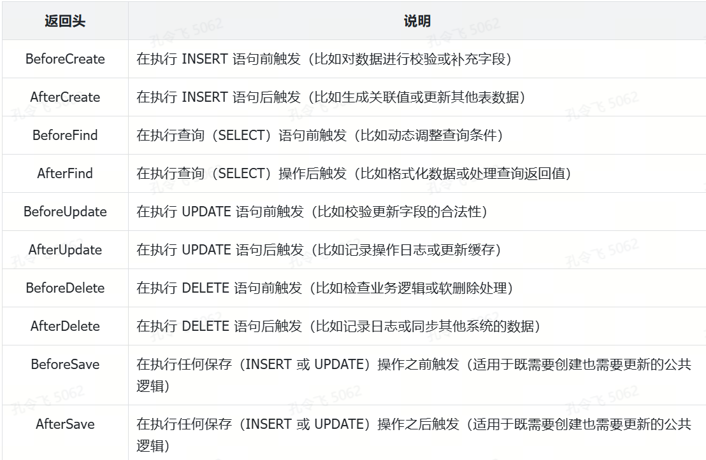

业务实现（1）：实现 Store 层数据结构定义
在完成基础功能开发后，需要进一步开发与业务逻辑相关的代码。相较于基础功能，业务逻辑代码不仅占据了代码仓库的大部分代码量，其复杂性也更高。因此，需要设计一种合理的代码架构，以确保代码的可读性、可维护性和可扩展性。目前，业界较为流行且被广泛认可的代码架构是简洁架构。
三层架构开发
miniblog 三层简洁架构的依赖关系：Handler 层依赖 Biz 层，Biz 层依赖 Store 层，Store 层依赖数据库。依赖关系如图 9-1 所示。

为了能够随时测试所开发的代码功能，最优的方式是优先开发依赖较少的组件。否则，需要先 Mock 或开发所依赖的功能（层）。因此，开发顺序应为：先开发 Store 层，接着是 Biz 层，最后是 Handler 层。
每一层通常包含多个功能，这里建议不要等待将每一层的全部功能开发完成后再进行其他层的开发，这样会导致整个应用程序的开发周期变长。最佳的方法是先开发一条完整的功能链路，例如优先实现用户创建的业务功能。这样可以快速启动应用的框架程序，提前发现并测试问题。其他业务功能也可以通过拷贝已开发代码后进行二次修改，从而快速完成开发。
本节课及接下来几节课代码改动量较大，其中有很多同类改动。为了提高你的学习效率，本节课不会对代码进行逐行解读，相反主要讲解其中的核心设计和实现。
Store 层数据结构定义
根据依赖关系，需要先开发 Store 层代码。Store 层依赖一些数据类型。如果项目持久存储用的是 MySQL/MariaDB 数据库，这些数据类型其实就是 GORM Model。GORM Model 实际上是数据库表字段到 Go 结构体的映射。可以根据 miniblog 数据库中的表来创建对应的 Model。
提示：
本节最终源码位于 miniblog 项目的 feature/s16 分支。
miniblog 数据库中包含以下三张表，这些表的结构在项目设计阶段已完成设计和创建：
- casbin_rule 表：该表用于存放 casbin 的授权策略，由 casbin 库自动创建，无需特别关注；
- user 表：该表用于存储用户数据；
- post 表：该表用于存储博客数据。
需要根据表名、表字段及表字段类型创建 Store 层的 Go 结构体，以映射数据库中的对应表。建议将映射数据库表的 Go 结构体以 <表名的大驼峰命名>M 格式进行命名。例如用户表的数据库表名为 user，则其对应的 Go 结构体名为 UserM。这种语义化的命名方式具有以下优点：
- 通过后缀 M，可以明确这是一个 Store 层使用的 Go 结构体，专用于映射数据库表；
- 通过 User 可以确定该结构体映射的是数据库中的 user 表；
- UserM 结构体类型的实例名称可以命名为 userM。与直接命名为 user 相比，这种命名方式能够有效避免变量命名冲突。
语义化的命名能够帮助开发者明确结构体的用途和映射的表名，从而提高开发效率并降低理解成本。
UserM 结构体定义可以手动编写，也可以借助工具自动生成。建议使用工具自动生成，具体步骤如下：
- 创建数据库和数据库表；
- 根据数据库表生成 Model 文件；
- 修改生成的 Go 代码。
创建数据库和数据库表
数据库和数据库表的创建方式及 SQL 相关知识不在本课程讨论范围内。为了方便读者快速创建 miniblog 数据库和表结构，本课程在 feature/s16 分支下提供了一个名为 configs/miniblog.sql 的文件，其中保存了数据库初始化的 SQL 语句。
数据库的字段命名风格可以是驼峰格式，也可以是蛇形格式。因为是 Go 项目，为了跟 Go 的变量命名风格保持一致，方便字段映射，建议数据库的字段命名也使用驼峰格式。
在初始化数据库时，只需登录数据库，在数据库交互 Shell 中执行 source configs/miniblog.sql; 即可完成 miniblog 数据库、表结构及部分初始化数据的创建操作。在本课程第 2 讲中，已完成一个可用的 miniblog 数据库环境初始化，这里不需要再次初始化。
根据数据库表生成 Model 文件
在 Go 项目开发中，编写 GORM Model 文件通常有多种方式，例如根据数据库表结构手动编写 GORM Model，或使用读取数据库表结构并自动生成 GORM Model 的工具，例如 db2struct。
GORM 官方提供了 Gen 工具以及 gorm.io/gen 包，用于读取数据库表结构并自动生成 GORM Model 结构体。与其他工具相比，Gen 工具更加友好、安全且灵活，也是推荐的 GORM Model 生成工具。
在实际开发中，可以直接在 Linux 命令行中运行 gentool 工具生成 GORM Model。但更推荐的方式是基于 gorm.io/gen 包，开发一个与项目适配的 Model 生成工具。相较于 gentool 工具，gorm.io/gen 包提供更加强大且灵活的定制能力。在基于数据库表结构生成 Model 结构体时，通常需要根据项目需求实现以下定制功能：
- 自定义结构体名：将数据库表名映射为指定的 Go 结构体名;
- 自定义结构体字段名：根据数据库字段名，生成指定的结构体字段名;
- 自定义 GORM 标签：指定 Model 结构体的 GORM 标签;
- 自定义结构体字段类型：给某个结构体字段指定自定义的字段类型;
- 自定义结构体字段注释：在生成的代码中添加更具描述性的注释以增强代码可读性;
- 自定义代码生成路径：自定义 GORM Model 文件的保存路径。
除了上述常用的自定义能力，gorm.io/gen 包还提供其他非常多的自定义能力。
miniblog 项目的 GORM Model 生成工具见 feature/s16 分支的 cmd/gen-gorm-model/gen_gorm_model.go 文件。gen_gorm_model.go 代码量比较大，且拥有详尽的注释，课程中不再详细介绍。
为了降低读者的学习成本，miniblog 支持开启 SQLite 数据库的内存模式（In-Memory Mode）。通过使用内存存储数据，可以移除快速部署时对 MariaDB 的依赖。在程序启动时，GORM 会基于 Model 结构体定义，通过类似于 AutoMigrate(&model.UserM{}) 的调用方式，自动在内存数据库中创建数据库表。但是在通过 MariaDB 表结构生成的 GORM Model 结构体的列标签并不能用来自动创建 SQLite 表结构。这是因为 MariaDB 中的有些字段类型，SQLite 并不支持。所以，在创建 *gen.Generator 类型的实例时，需要设置 FieldWithTypeTag 为 false，以关闭列标签的生成。
为了在代码中明确标识出 GORM Model 结构体类型，统一将 GORM Model 结构体命名为 <表名的大驼峰命名>M 的格式，需要在 GenerateModelAs 方法中，指定生成的 GORM Model 结构体名。
为了生成符合 Go 语言开发规范的结构体名，使用 gen.FieldRename() 方法，将 casbin_rule 表 ptype 字段对应的结构体字段重命名为 Ptype。
gorm.io/gen 包默认生成的默认时间 gorm 标签为 default:current_timestamp()，该标签不能被 SQLite 识别，需要使用 gen.FieldGORMTag 方法重命名为 default:current_timestamp。
gorm.io/gen 包默认生成的 uniqueIndex 标签页不能直接适用于 SQLite，也需要通过 gen.FieldGORMTag 重新指定。
gen.FieldIgnore("placeholder") 的作用是告诉 gorm/gen 在生成模型代码时忽略表中名为 placeholder 的字段，不会将它包含在生成的 Go 模型结构体中。这里仅展示用，不会对功能有任何影响。在 gen_gorm_model.go 文件中，还通过设置 ModelPkgPath 配置项，将生成的 GORM Model 代码保存在了 internal/apiserver/model/ 目录中。
提示：
casbin_rule 表由 casbin 包自动生成，casbin_rule 表中保存了授权相关的设置。
因为编写了 gen-gorm-model 工具用来快速生成 Model 文件，所以，在每次数据库有字段增删改的时候，都可以运行 gen-gorm-model 来生成 Model 文件。运行以下命令，可以查看 gen-gorm-model 的使用方式：
$ go run cmd/gen-gorm-model/gen_gorm_model.go -h
Usage: main [flags] arg [arg...]
This is a pflag example.
Flags:
-a, --addr string MySQL host address. (default "127.0.0.1:3306")
--component strings Generated model code's for specified component. (default [mb])
-d, --db string Database name to connect to. (default "miniblog")
-h, --help Show this help message.
--model-pkg-path string Generated model code's package name.
-p, --password string Password to use when connecting to the database. (default "miniblog1234")
-u, --username string Username to connect to the database. (default "miniblog")
运行以下命令来生成 GORM Model 文件：
$ cd cmd/gen-gorm-model/
$ go run gen_gorm_model.go -a 127.0.0.1:3306 -u 'miniblog' -p 'miniblog1234'
生成的 Model 文件位于 internal/apiserver/model/目录中。
添加 GORM 钩子
在生成了 GORM Model 结构体之后，可根据需要给这些结构体添加一些 GORM 钩子。常用的 GORM 钩子见表 9-1 所示。

miniblog 项目在 internal/apiserver/model/hook.go 文件中，添加了数据库表 userID 和 postID 字段的自动生成钩子，用来生成并保存记录的唯一标识符，如代码清单 9-1 所示。
package model
import (
"gorm.io/gorm"
"github.com/onexstack/miniblog/internal/pkg/rid"
)
// AfterCreate 在创建数据库记录之后生成 postID.
func (m *PostM) AfterCreate(tx *gorm.DB) error {
m.PostID = rid.PostID.New(uint64(m.ID))
return tx.Save(m).Error
}
// AfterCreate 在创建数据库记录之后生成 userID.
func (m *UserM) AfterCreate(tx *gorm.DB) error {
m.UserID = rid.UserID.New(uint64(m.ID))
return tx.Save(m).Error
}
上述代码在创建完数据库表记录之后，会调用 rid 包，基于数据库生成的自增 ID 生成一个形如 user-uvalgf 的英文唯一 ID，并调用 tx.Save() 方法将 ID 更新到表记录中。
提示：
用户名本质上是用户提供的信息，用户可能因各种原因需要修改（例如微信支持修改微信号）。如果系统完全依赖用户名作为标识，修改用户名时会对数据库中的外键关联、缓存、日志记录或权限管理等造成影响。而 UserID 不可变，即使用户名修改，UserID 仍能稳定地标识同一用户。
Go 项目开发中，需要为每一个条 REST 资源生成唯一标识符（Unique Identifier,UID），以唯一定位该 REST 资源。例如更新资源、删除资源时，需要提供该唯一 ID。生成唯一标识符时，有以下几点事项需要注意：
- **冲突问题：**无论使用何种策略，需要确保生成的标识符在业务范围内不冲突。在分布式环境中生成标识符时，需要特别注意跨节点冲突问题，例如雪花算法中机器 ID 的正确配置；
- **性能瓶颈：**对于高并发系统中，大量请求同时生成 ID 可能会成为瓶颈。需要选择性能较高的算法（如雪花算法），避免依赖数据库的自增主键；
- **信息泄露：**ID 不应透露敏感信息。避免直接使用数据库主键作为唯一 ID 并暴露给用户，同时要考虑攻击者通过分析逻辑标识符推断出系统内部数据；
- **唯一性范围：**如果使用时间戳等生成 ID，需结合业务需求分析唯一性范围（全局唯一、表级唯一还是某特定场景唯一）；
- **可扩展性：**唯一标识符的生成应具备足够的扩展能力，例如未来新增资源或迁移到分布式环境时，仍然能生成唯一标识。
有很多种方法可以生成资源的唯一 ID，以下是可能使用到的方法：
- **使用数据库主键（Primary Key）：**数据库中的每条记录通常有一个主键（Primary Key），用来唯一标识一条记录。然而，我们通常不会直接使用数据库的自增主键。因为使用主键作为 ID，会暴露系统的数据规模，并且数据库 ID 是可预测的，攻击者可以轻松的基于当前的 ID，模拟一个存在的 ID，并尝试访问；
- **使用 36 位 UUID：**UUID 是一种广泛使用的通用唯一标识符，能够在时间和空间上保证唯一性。在 Go 项目开发中，可以使用 github.com/google/uuid 包来生成全球唯一的 UUID。使用 UUID 的最大好处是生成方式简单。缺点是长度较长不易记忆，占用存储空间大。示例代码如下：
import (
"github.com/google/uuid"
)
func GenerateUUID() string {
return uuid.New().String() // 生成一个新的 UUID，并转为字符串格式
}
- **雪花算法（Snowflake Algorithm）：**雪花算法是 Twitter 提出的分布式 ID 生成算法，通过时间戳、机器编号和自增序列号组合生成唯一标识符。生成的 ID 通常是 64 位整数，按时间递增排序。可以使用 github.com/sony/sonyflake 包来生成 ID。雪花算法适合高性能、高并发的分布式场景。其优点是基于时间排序，生成的 ID 一定时间内是有序的。缺点是现相对复杂，可能受机器时钟漂移影响，需要引入额外的依赖（如机器编号）。示例代码如下：
import (
"github.com/sony/sonyflake"
"log"
)
func GenerateSnowflakeID() uint64 {
flake := sonyflake.NewSonyflake(sonyflake.Settings{})
id, err := flake.NextID()
if err != nil {
log.Fatalf("failed to generate ID: %v", err)
}
return id
}
- **数据库自增 ID 配合随机化：**使用数据库的自增 ID（如递增主键）加上一个随机后缀（或编码）生成唯一标识符。这是一种简单且实用的方法。在绝大部分项目中，全局使用一个数据库，数据库不存在主键冲突问题。其优点是可以生成短小的唯一 ID，例如：user-uvalgf。缺点是并非完全去中心化，需要依赖数据库生成初始 ID。示例代码如下：
import (
"crypto/rand"
"encoding/hex"
"fmt"
)
func GenerateRandomID(dbID int64) string {
// 随机生成 4 字节的随机值，作为自增 ID 的后缀
randomBytes := make([]byte, 4)
_, _ = rand.Read(randomBytes) // 生成随机数
randomSuffix := hex.EncodeToString(randomBytes) // 转为十六进制
return fmt.Sprintf("ID-%d-%s", dbID, randomSuffix) // 组合生成唯一 ID
}
- **基于时间戳的自定义生成：**按时间生成标识符，用当前时间戳加一定后缀或随机值的方式实现。该方法优点是简单直观，适合对时间敏感的业务。缺点是 ID 可预测，有可能出现冲突，需结合随机数后缀或机器编号。示例代码如下：
import (
"fmt"
"time"
)
func GenerateTimestampID() string {
timestamp := time.Now().UnixNano() // 当前时间戳 (纳秒级)
return fmt.Sprintf("TS-%d", timestamp)
}
- **分布式 ID：**在分布式系统或微服务中，数据库的自增主键仅在单个服务或数据库表中唯一。但多个服务或数据源需要统一标识一个记录时，自增主键可能会冲突。唯一标识符可以跨系统、跨服务维度保证唯一性。
自定义的唯一标识符可以包含更丰富的信息，例如时间戳、数据中心编号、业务类型等。这可以增强标识符的可读性，方便用作业务日志、用户界面或跨服务传递的数据。另外，唯一标识符的生成一般不依赖于数据库，可以在程序中独立生成。这种去中心化的设计减少了对数据库的依赖，提升了系统的扩展能力，特别是在分布式环境中。
基于上述唯一 ID 生成注意事项和方法，miniblog 开发了 onexstack/miniblog/internal/pkg/rid 包用来生成唯一 ID。
rid（resource id）包实现如下述代码所示：
package rid
import (
"github.com/onexstack/onexstack/pkg/id"
)
const defaultABC = "abcdefghijklmnopqrstuvwxyz1234567890"
type ResourceID string
const (
// UserID 定义用户资源标识符.
UserID ResourceID = "user"
// PostID 定义博文资源标识符.
PostID ResourceID = "post"
)
// String 将资源标识符转换为字符串.
func (rid ResourceID) String() string {
return string(rid)
}
// New 创建带前缀的唯一标识符.
func (rid ResourceID) New(counter uint64) string {
// 使用自定义选项生成唯一标识符
uniqueStr := id.NewCode(
counter,
id.WithCodeChars([]rune(defaultABC)),
id.WithCodeL(6),
id.WithCodeSalt(Salt()),
)
return rid.String() + "-" + uniqueStr
}
代码清单 9-2，定义了一个 ResourceID 数据类型，其 String 方法和 New 方法，分别用来返回资源的字符串标识和资源的唯一 ID，格式为 <资源标识符>-<6 位随机数>。使用带资源前缀的唯一 ID，有利于通过唯一 ID 辨别资源类型，通过前缀避免可能的随机数冲突。
ResourceID 是一个简单的、可扩展的统一表示形式，未来可根据需要添加更多的自定义资源，并复用 ResourceID 的方法，生成新资源的唯一 ID，例如 comment-w6irkg。New(counter uint64) 方法中的 counter 通常为数据库自增 ID，基于数据库自增 ID 生成唯一标识，不仅可以生成短小、易读的唯一 ID，还可以隐藏掉自增 ID 的背后的数据规模。